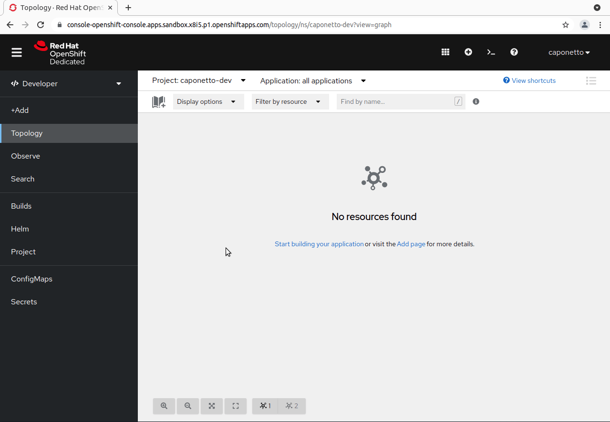
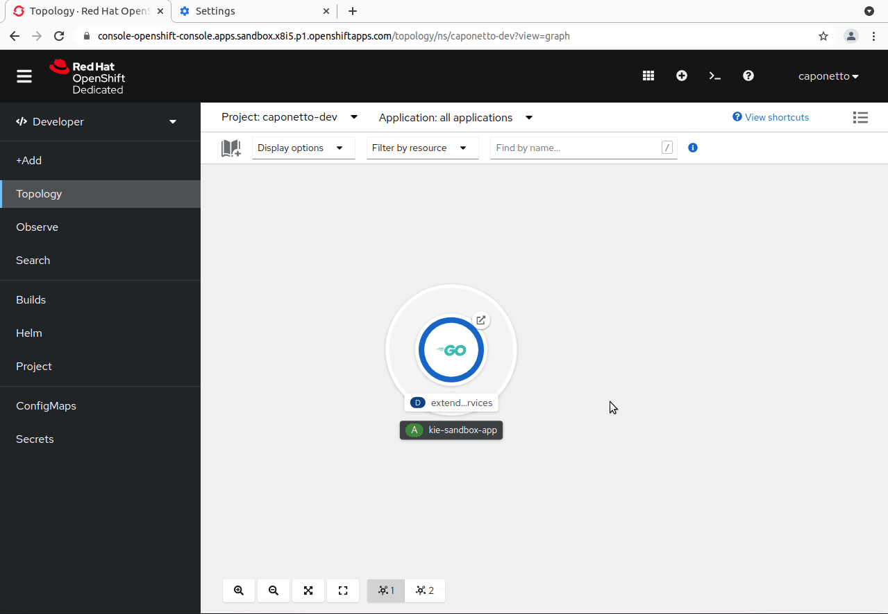
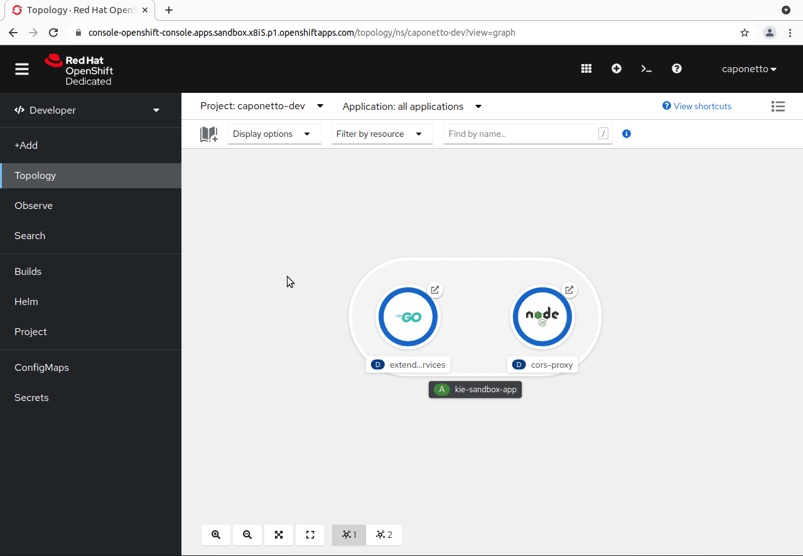
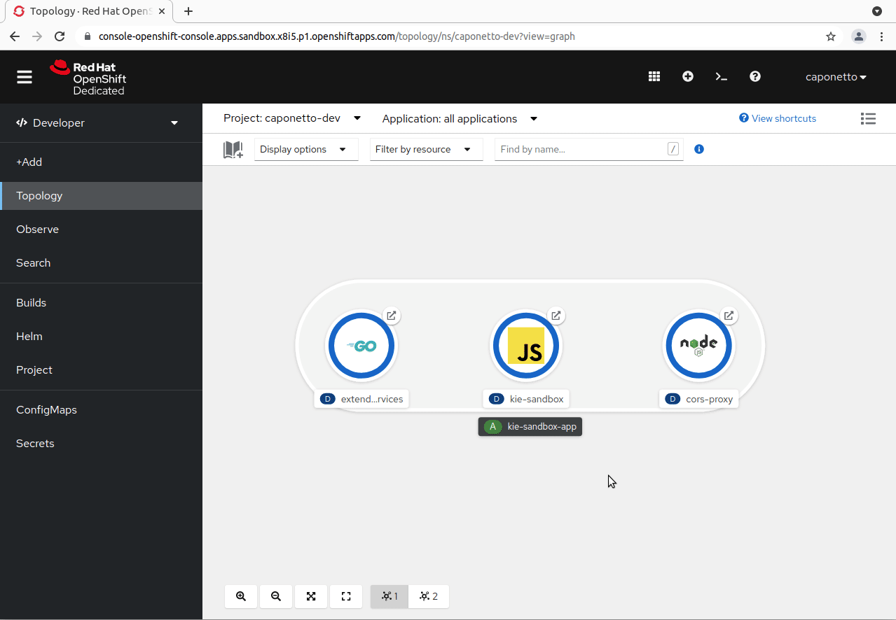
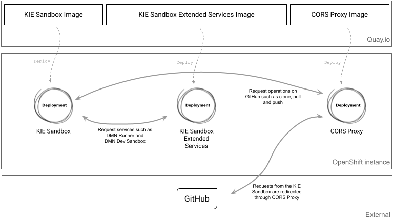

Deploy your KIE Sandbox to OpenShift
The Kogito Tooling release 0.16.0 includes three container images to make it easy to deploy the KIE Sandbox to an OpenShift instance. All these container images are publicly available on Quay.io.
Let’s describe the container images and check out how to deploy them in this post.

KIE Sandbox Extended Services
Formerly known as KIE Tooling Extended Services, the KIE Sandbox Extended Services extends the capabilities of the editors through external services, such as the DMN Runner.
Since the release of the extended services, users install the services on their machines and point the KIE Sandbox to a local port to interact with the provided features.
Starting from Kogito Tooling release 0.16.0, a container image that includes the extended services is provided, which users can deploy and point the KIE Sandbox to the corresponding container public URL. In other words, there is no need to install it locally anymore.
This is not mandatory, though. If users do not want to deploy their own KIE Sandbox Extended Services container, they can keep using the extended services locally, the same as before.
Now, let’s see how to deploy the KIE Sandbox Extended Services to OpenShift using the web interface. You will need the following container image:
quay.io/kogito_tooling_bot/kie-sandbox-extended-services-image:0.16.0

Note: The route must be over HTTPS.
CORS Proxy
The 0.14.1 release of Kogito Tooling marks the evolution of the .NEW environment to KIE Sandbox. Among many features, users can clone GitHub repositories right inside the sandbox and push changes back to GitHub.
Watch the KIELive#53 if you haven’t done it yet to learn more about the new generation of online authoring tools.
However, to interact with GitHub through the KIE Sandbox, a CORS Proxy is needed to be placed in between them. Otherwise, requests from the KIE Sandbox would not be accepted due to GitHub’s policy. Thus, a default CORS Proxy deployment is internally configured.
As part of the Kogito Tooling release 0.16.0, a container image has also been prepared for users to have their own CORS Proxy deployment rather than using the default one.
This is not mandatory as well. If users do not want to deploy their own CORS Proxy container, they can continue to use the default one with no changes required.
Being very similar to deploying the KIE Sandbox Extended Services, let’s check out how to deploy the CORS Proxy to OpenShift using the web interface. You will need the following container image:
quay.io/kogito_tooling_bot/cors-proxy-image:0.16.0

Note: The route must be over HTTPS.
KIE Sandbox
Last but not least, a container image for the KIE Sandbox is also included in the 0.16.0 release, enabling users to have their own KIE Sandbox deployment.
Moreover, the KIE Sandbox accepts environment variables that can be configured during the deployment to connect it with the KIE Sandbox Extended Services and CORS Proxy deployments. The environment variables are:
- KIE_SANDBOX_EXTENDED_SERVICES_URL: The URL that points to the KIE Sandbox Extended Services deployment.
- CORS_PROXY_URL: The URL that points to the CORS Proxy deployment
Now, suppose the KIE Sandbox Extended Services and the CORS Proxy are already deployed. Let’s check out how to deploy the KIE Sandbox using the environment variables to connect them all. You will need the following image:
quay.io/kogito_tooling_bot/kie-sandbox-image:0.16.0

Notes: The route must be over HTTPS. Also, do not add trailing slashes in the URLs when setting them as environment variable values.
After these steps, a fully configured KIE Sandbox will be deployed and available to try on:

Review
We have seen the container images that are included in the Kogito Tooling 0.16.0 release and how to deploy them to OpenShift. Here is a summary of everything that was shown in this post:

Bonus: Running the container images locally
First, run the CORS Proxy container:
podman run -p 8081:8080 -i quay.io/kogito_tooling_bot/cors-proxy-image:0.16.0
It will be available at http://localhost:8081.
Second, run the KIE Sandbox Extended Services container:
podman run -p 21345:21345 -i quay.io/kogito_tooling_bot/kie-sandbox-extended-services-image:0.16.0
It will be available at http://localhost:21345.
Finally, run the KIE Sandbox container:
podman run -p 8080:8080 -e KIE_SANDBOX_EXTENDED_SERVICES_URL=http://localhost:21345 -e CORS_PROXY_URL=http://localhost:8081 -i quay.io/kogito_tooling_bot/kie-sandbox-image:0.16.0
It will be available at http://localhost:8080.
And that’s all for today. Thanks for reading! 😃